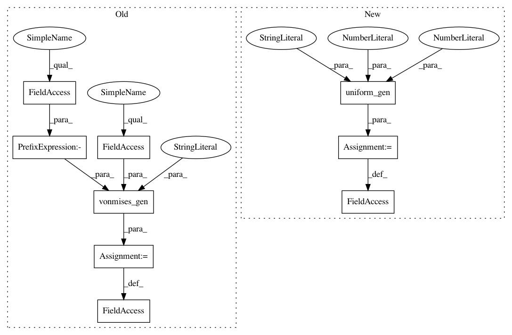

da9ad1ea09dac880289d6f7325c98d285ec7fb8e,scipy/stats/_continuous_distns.py,,,#,4370
Before Change
def _stats_skip(self, kappa):
return 0, None, 0, None
vonmises = vonmises_gen(name="vonmises")
vonmises_line = vonmises_gen(a=-np.pi, b=np.pi, name="vonmises_line")
class wald_gen(invgauss_gen):
A Wald continuous random variable.
After Change
def _entropy(self):
return 0.0
uniform = uniform_gen(a=0.0, b=1.0, name="uniform")
class vonmises_gen(rv_continuous):
A Von Mises continuous random variable.
In pattern: SUPERPATTERN
Frequency: 4
Non-data size: 9
Instances
Project Name: scipy/scipy
Commit Name: da9ad1ea09dac880289d6f7325c98d285ec7fb8e
Time: 2016-01-08
Author: manitejanmt@gmail.com
File Name: scipy/stats/_continuous_distns.py
Class Name:
Method Name:
Project Name: scipy/scipy
Commit Name: 3453214d3562be6273f02ea8b24156515c96f4d6
Time: 2015-02-20
Author: alexander.conley@colorado.edu
File Name: scipy/stats/_continuous_distns.py
Class Name:
Method Name:
Project Name: scipy/scipy
Commit Name: c49716c44cf9fda9b8962e94ce70a794f446ab3e
Time: 2016-01-10
Author: daniel.bunting14@imperial.ic.ac.uk
File Name: scipy/stats/_continuous_distns.py
Class Name:
Method Name:
Project Name: scipy/scipy
Commit Name: da9ad1ea09dac880289d6f7325c98d285ec7fb8e
Time: 2016-01-08
Author: manitejanmt@gmail.com
File Name: scipy/stats/_continuous_distns.py
Class Name:
Method Name:
Project Name: scipy/scipy
Commit Name: dd61b6d5ff3efefbbf3686fcfe6d5cc619d9e24b
Time: 2016-04-03
Author: andyfaff@gmail.com
File Name: scipy/stats/_continuous_distns.py
Class Name:
Method Name: